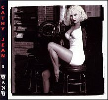
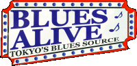

First CD
. . . .
. . . . . . . . . . . . . . . . . .
Second CD
Reviews

Reviews
. . . . . . . . . . . . . . . . . . . . . . . . . . . . .
![[barrier bar]](gif/thinbar.gif)
If you have "RealOne Player" (or later) on your computer,
you can play samples from Cathy Jean's latest CD
Marshall Road Apocalypse:
1. Your One and Only
2. Kauai
3. Call It (Quits)
4. The Kids From Glen Burnie
5. Ms. Jeneration Hip Zone
6. Dirty One
7. Behind My
8. It's On Me
9. Austria
10. Purple Tattoos
11. Prophet
12. You Don't Know
13. Strut
14. Get Me Out
15. The Fabulous New Debbie Song
Reviews
Don't have RealOne Player?

If you have "RealOne Player" on your computer,
you also can hear samples from
I Want:
1. Be Glad 9. Please Stop Seeing that Girl
2. I Want 10. I'm Your Girl
3. **4 in the Morning** 11. See You Tomorrow
4. Unfinished Business 12. Blues Singin' Alcoholic
5. How Many 13. I Want your Mother to Know/Rotten B
6. Leave Me Alone 14. Suffer
7. Why Don't You See Me 15. Blues Psalm
8. Tallow Shuffle
Quality of the sound samples not as good as CD quality?
You're right!
(But we will keep watching for technology improvements
that enable us to bring you streaming audio that is closer to CD quality.)
Occasionally, you can also hear Cathy Jean on
![[House of Blues]](gif/hob1.gif)
![[Radio]](gif/hobdrn_logo.gif)
If you like to read about Cathy Jean,
find a copy of
November 1999 issue and see pages 26, 29, and 30 for her comments on what women blues artists face.
Also see
(Blues Revue Magazine is available at all
Borders Books and Music stores)
and see the Cathy Jean interview by

and the Cathy Jean interview by
![[Lea Gilmore's Interview with Cathy Jean]](gif/gtlogo.gif)
To purchase right now any of Cathy Jean's albums, visit
Amazon.com** or
CDstreet.com or
CDbaby.com
(CDstreet.com also lets you phone-in your order
toll-free at 1-877-692-7999 or to FAX it to them at 1-214-747-7979
Monday - Friday 8am - 6 pm CST.)
**Amazon.com's advertising idea, "Auctions & zShops," unfortunately, causes
music completely unrelated to Cathy Jean®,
specifically, music from a 1950s group named "Cathy
Jean & the Roommates"--but Amazon.com leaves out "& the Roommates"--to be
included with our Cathy's information. Please ignore these 45-RPM era
unrelated ads.
(The 1950s pop singer is at least 40 years older than
Cathy Jean®, blues singer and blues rock singer.)
To purchase any of Cathy Jean's albums directly from
Cathy Jean® Productions
during normal East Coast U.S. business hours
grab your
then phone Cathy Jean® Productions
at (410)242-7742
or
send ordinary
e-mail
to Cathy Jean® Productions
including your credit card number, its expiration date, and your
name as it appears on the card,
plus a statement of exactly what you want.
or
send a check or money order,
made payable to Cathy Jean
(NOT Cathy Jean Productions):
$14.00 (U.S.) for a Marshall Road Apocalypse CD,
$13.00 (U.S.) for an I Want CD,
$11.00 (U.S.) for a Tear Me Apart CD,
$9.00 (U.S.) for an I Want cassette tape,
$7.00 (U.S.) for a Tear Me Apart cassette tape,
and add $3.00 (U.S.)
shipping if outside the U.S.A.,
to...
Cathy Jean® Productions
Post Office Box 7371
Baltimore, Maryland 21227
USA
Want an autographed photo of Cathy Jean?
Use your credit card at (410)242-7742
or
send a check or money order, made payable to Cathy Jean,
for $5.00
(U.S.),
which covers mailing and materials costs,
to the Cathy Jean® Productions address above.
Want to get in touch with Cathy Jean?
Best: Phone Cathy Jean® Productions at (410)242-7742
Second Best: Send E-mail
Third Best: Send a FAX to Cathy Jean® Productions at (410)242-8729
Fourth Best: Mail a letter to the Cathy Jean® Productions address shown above.
Links to other blues sites and musician related things you may be interested in, in alphabetical order:
The Bands Page
Bias Recording Studio: where CJ recorded her 2nd & 3rd CDs
Bill "Curley Red" Louis
Blues City, WVUA
Blues Clubs
The Blue Highway
Blues Link
Blues Music Association
Blues On Stage
Blues On Tap
Blues Sites Link Page
Blues Societies & Foundations
BluesWEB
Blues World
The Cascade Blues Association
Drummer's Web - Drumming Related Stuff
femmusic.com
Jammin' Jim's Blues Page
CDs from Michigan based blues artists
The Internet Resource for Musicians
Music Associations & Organizations
Musician.com's Musician
Search Form
Musician.com's Free
Musician Search Service Entry Form
Musician's Web
New Zealand Blues Society
Record
Company Mailing Addresses
Sonny Boy Lee's Blues
Radio